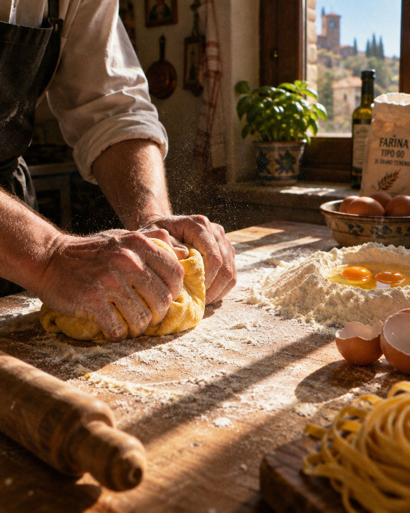
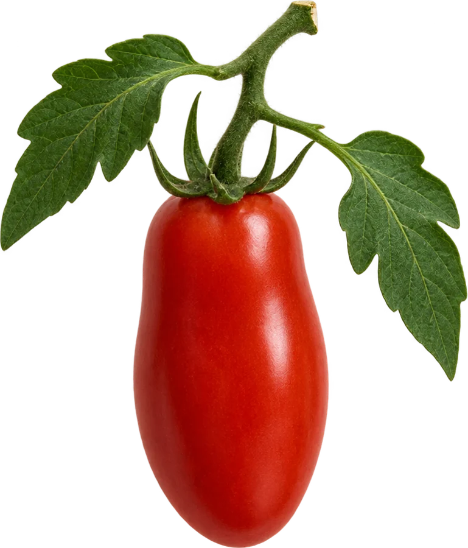

Antipasti
0113 €
Burrata e pomodorini
Burrata des Pouilles, tomates cerises rouges et jaunes, basilic, huile d'olive de Sicile.
0212 €
Vitello tonnato
Veau rosé, sauce au thon et aux câpres, comme à Turin le dimanche.
Primi · pasta fresca
0318 €
Tagliatelle al ragù
Le ragù de nonna Carmela, six heures sur le feu, parmigiano 24 mois.
0416 €
Cacio e pepe
Tonnarelli, pecorino romano, poivre noir concassé au moment.
0519 €
Ravioli ricotta e limone
Ricotta de brebis, citron d'Amalfi, beurre noisette et sauge.
Dolci
068 €
Il tiramisù di Giulia
Mascarpone, café serré, savoiardi, cacao amer. Servi dans un verre, comme à Naples.
Formule du midi, du mardi au vendredi : un primo et un dolce, 21 €. Vins italiens au verre dès 6 €.